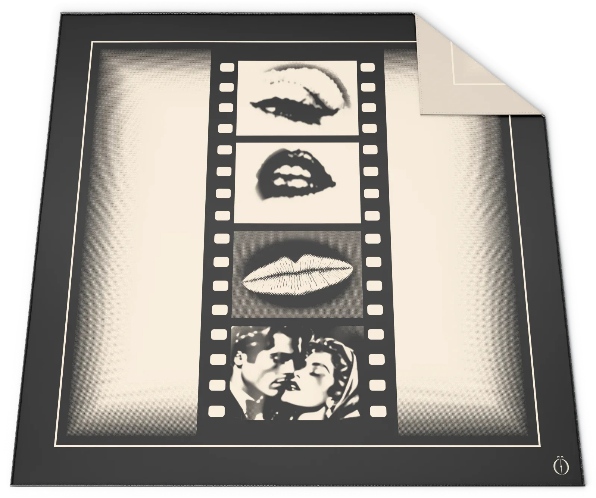
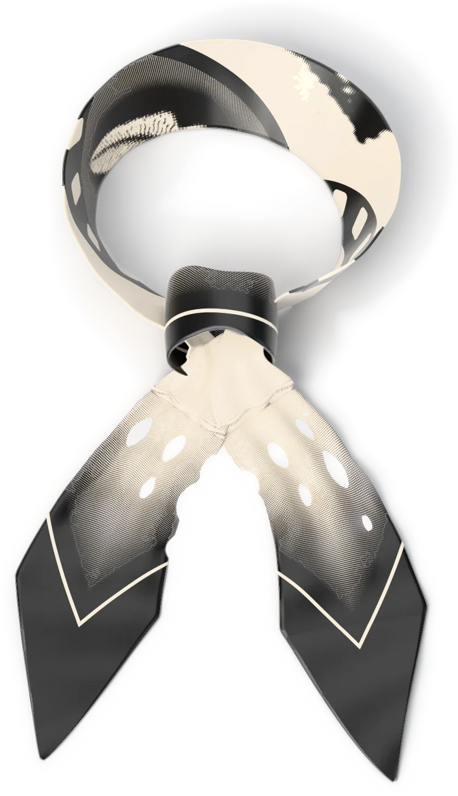
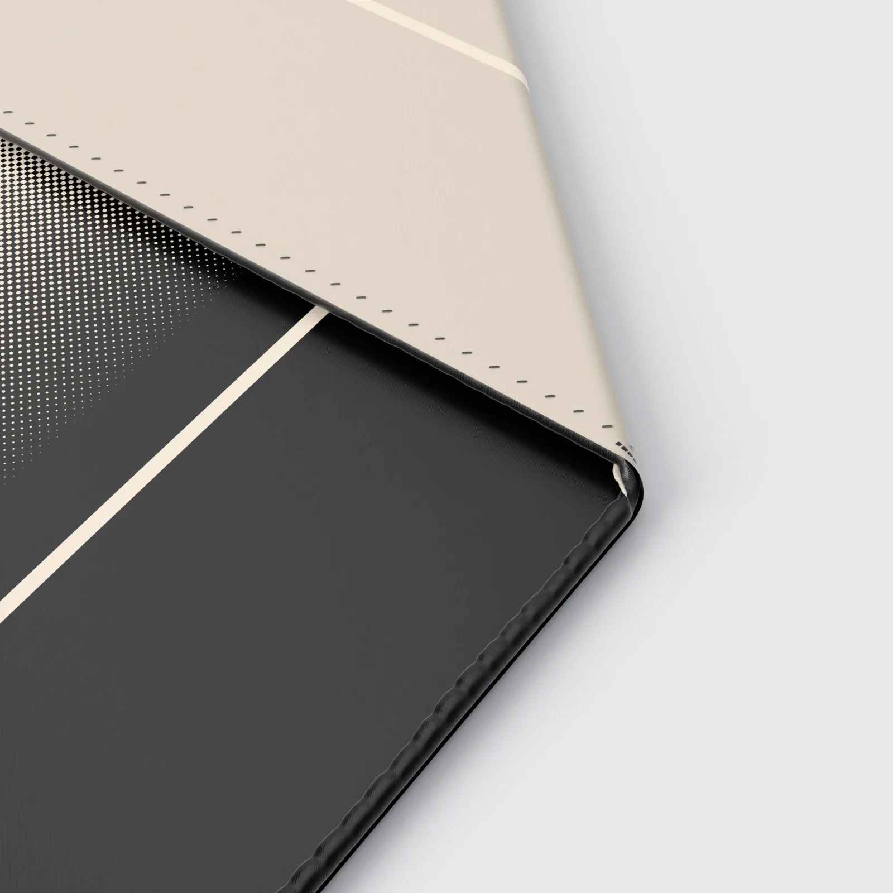

STAND-IN · img/cordel/front/master.* (departments/apparel/new-pieces-2026-11/build/silk-scarf/site/silk_scarf_front_16k.png; 16K, 15360 × 8640)
STAND-IN · img/cordel/knot/master.* (knot view, 8K; 8K, 7680 × 4320)Where it is going
The café
A second cup, still warm.
Chapter I · Accessories
Cordel
Silk scarf
Scroll to walk around it
Chapter I
Cordel
Silk scarf
Chapter I in four frames. A film strip running down a 90 cm square of silk twill, the Ö in one corner like the studio's mark.
- SILK
- TWILL
- DIMENSIONS
- 90 × 90 CM
- COLOURWAY
- BLACK / CREAM
PRICE ON REQUEST
Keep a seatThe register sees the pre-sale first.
Details
- Pre-sale
- Made to order. We email your delivery date once production is confirmed. Cancel for a full refund any time before production starts.
- Returns
- Exchanges within 14 days of delivery, unused and with tags.
- Care
- Dry clean. Steam on low from the inside; no direct iron on the satin. Keep out of strong light. Care
- Size
- The measurements
 STAND-IN · img/cordel/world/master.* (C4: the last frame, the world plate (the café); 8K, 5760 × 7680)
STAND-IN · img/cordel/world/master.* (C4: the last frame, the world plate (the café); 8K, 5760 × 7680)Where it is going · C4
The café
A second cup, still warm.
On the screen in the film, the picture is tomorrow: each piece in the place it is going, with one place kept for someone.
The filmClose
The print

STAND-IN · img/cordel/detail-hem/master.* (the rolled hem, 8K close-up; 8K, 7680 × 4320)The rolled hem
The maker’s notes
Cordel, the silk scarf
- It begins as a print file: 90 by 90 cm of silk twill, two colours, black and cream.
- A border of 8 cm of black carries one cream line, 2.7 mm wide.
- A strip of film runs down the centre, 32.2 cm wide, four sprocket holes to a frame.
- It holds four frames, each 22 by 16 cm, all on one screen of round dots at 45 degrees.
- The edge is rolled onto the face, about 4 mm across, and caught by a stitch every 5.2 mm.
- One mark sits in a corner of the border, 3 cm tall.
Behind it: the same print, seen through the silk, mirrored and fainter.
Read the bookThe packaging
The house lights go down. Black board, cream tissue the colour of the screen, and one gold disc between you and the first scene.
 STAND-IN · img/shared/pack-closed/master.* (packaging/chapter1/renders: closed (the approved final, 3840 px); 8K, 7680 × 4320)
STAND-IN · img/shared/pack-closed/master.* (packaging/chapter1/renders: closed (the approved final, 3840 px); 8K, 7680 × 4320)The closed box, its band and the gold disc
 STAND-IN · img/shared/pack-open/master.* (packaging/chapter1/renders: open (the approved final, 3840 px); 8K, 7680 × 4320)
STAND-IN · img/shared/pack-open/master.* (packaging/chapter1/renders: open (the approved final, 3840 px); 8K, 7680 × 4320)The open box, the piece folded in cream tissue
 STAND-IN · img/shared/pack-disc/master.* (packaging/chapter1/renders: disc (the approved final, 3840 px); 8K, 7680 × 4320)
STAND-IN · img/shared/pack-disc/master.* (packaging/chapter1/renders: disc (the approved final, 3840 px); 8K, 7680 × 4320)The gold disc on the band
 STAND-IN · img/shared/pack-shopping/master.* (packaging/chapter1/renders: shopping (the approved final, 3840 px); 8K, 7680 × 4320)
STAND-IN · img/shared/pack-shopping/master.* (packaging/chapter1/renders: shopping (the approved final, 3840 px); 8K, 7680 × 4320)The shopping bag with cream tissue
 STAND-IN · img/shared/pack-trims/master.* (packaging/chapter1/renders: trims (the approved final, 3840 px); 8K, 7680 × 4320)
STAND-IN · img/shared/pack-trims/master.* (packaging/chapter1/renders: trims (the approved final, 3840 px); 8K, 7680 × 4320)The hang tag, the card and the sealed envelope